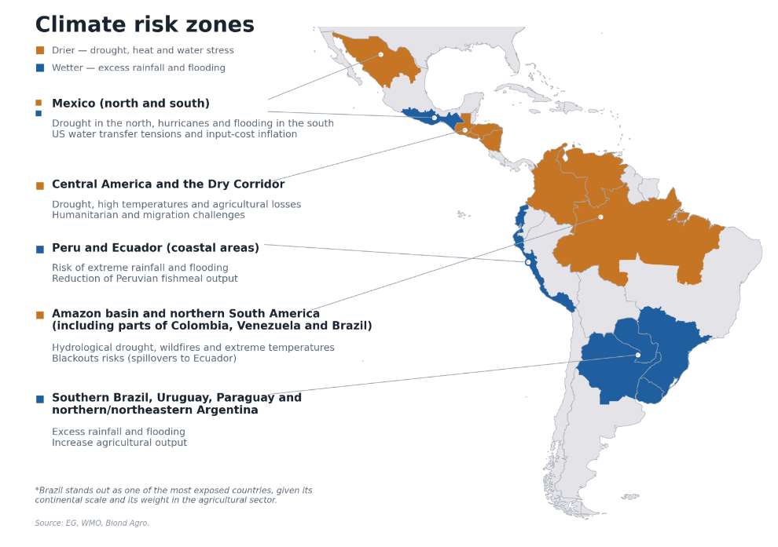
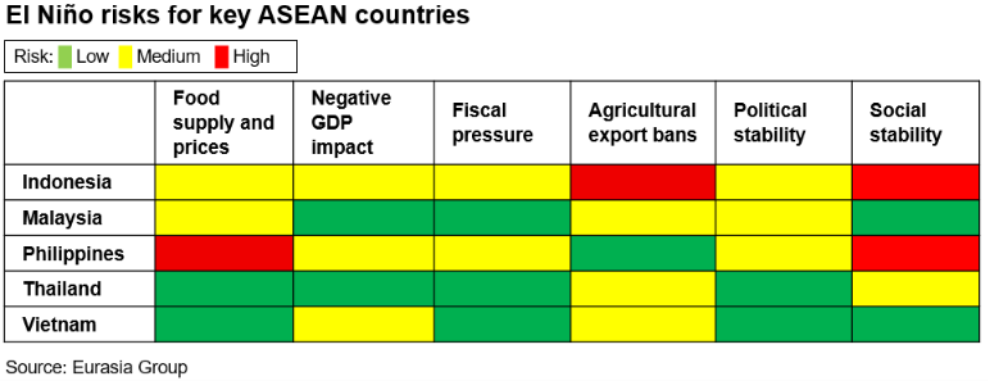
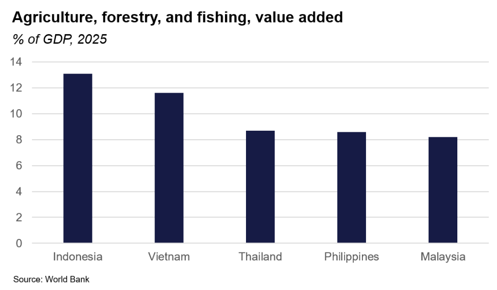
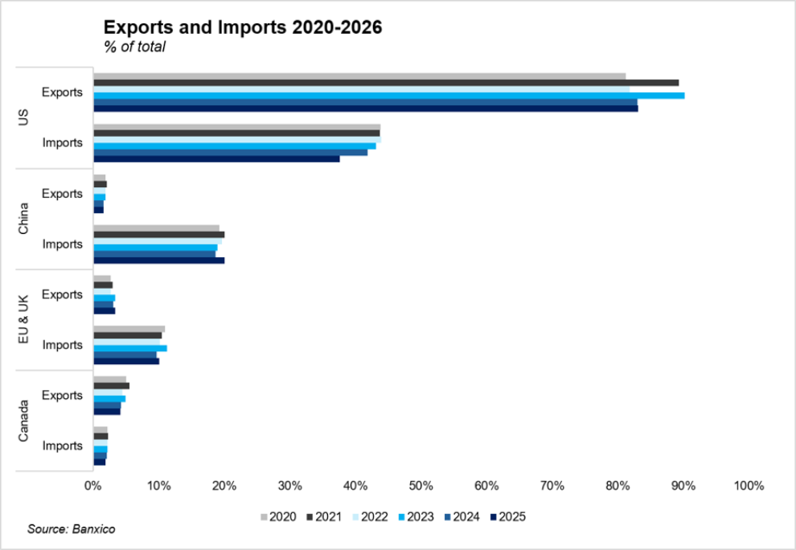

|
13 Jul 2026 08:24 EDT |
||
|
|||
|
|||
summary
|
|||
the top lineIan Bremmer on Iran, AI, and US politics
For more of Ian’s insights on the NATO summit, China and more, read the EG Update.
US—Watch for moves against the Federal Election Commission
Latin America—El Niño's political costs will likely hit Andean governments hardest
 Philippines and Indonesia face highest El Niño risks in region
  Mexico, US—Mexico's legal offensive against ICE risks more direct clash with Washington
Upcoming conference calls
|
||

eg in depthMexico—Trade and investment diversification efforts are meant to complement US ties. Faced with fiscal constraints and limited public resources, Sheinbaum's administration is seeking new sources of investment and financing for its Plan Mexico infrastructure initiative through trade agreements that unlock FDI and technology transfers. The recent European Parliament approval of the modernized EU-Mexico agreement and the decision to remain in the Comprehensive and Progressive Agreement for Trans-Pacific Partnership (CPTPP) are the latest steps to diversify investment and financing sources. Persistent financing gaps will keep pushing the administration toward blended structures, private capital, and multilateral support to sustain priority projects, but domestic bottlenecks will limit how much diversification translates into realized investment. Read more here. Reach out to discuss: mexico@eurasiagroup.net. 
The EG Daily Brief is compiled by Jens Larsen, Lucy Eve, Babak Minovi, Pietro Guglielmi, Rahul Bhatia, Marilia Sirio, Joseph Craven, Martina Silva, Sol Lopes, and Trista Kelley, with help from Marina Tavares, and Astral Betteridge. |
||
 |
closing quipI went from, ‘OK, he’s president, to ‘How can I get to be in his orbit?’ to ‘How can I get to have a say in what’s going to happen today, tomorrow, and next week?’”—Lindsey Graham, who died on 11 July, told the New York Times in 2019, referring to Trump. |
||
 |
|||